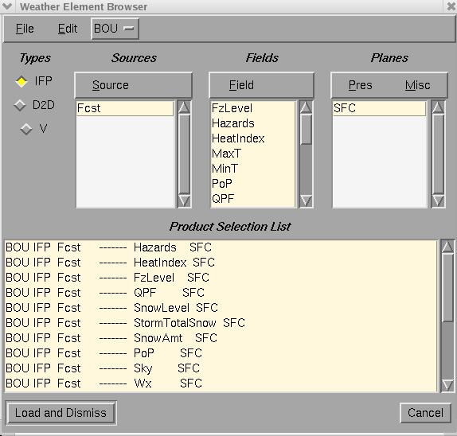

Load/Unload Weather Elements
Load/Unload Weather Elements
via Weather
Elements Groups
Create a new Weather Element
Group
With over a dozen weather elements per database and
many
databases, displaying all of the available weather elements in the GFE
would overly clutter the display. So, you can choose which weather
elements
you want to view and edit using the Weather Element Browser Dialog.
This
section describes how to use it.

Before you can begin editing grids of sensible weather, you need to
load forecast weather elements into the GFE. The following set of
exercises
shows you how to load and unload weather elements to and from the GFE.
- Purpose: Make weather elements
available for viewing and
editing.
- From the main menu bar, select WeatherElement->Weather
Element Browser. You should see a dialog appear that looks similar
to the figure above.
- Start from scratch by selecting Edit->Select None located at
the top
of
the Weather Element Browser dialog.
- Using the Source menu, select Fcst.
- Using the Field menu, select T, Td, Wind, and Wx. Note that all
of the
combinations of Fcst and the weather elements you selected now appear
in
the lower portion of the dialog.
- Select Load (in the lower left corner.)
Note that the combination of sources (databases) and
weather elements listed in the lower portion of the dialog were loaded
and are now available for viewing and editing in the GFE. If you are
familiar
with the AWIPS Volume Browser you may notice some similarities.
Repeat this operation, but this time deselect Wind
and
Wx in the lower portion of the dialog by clicking with MB1. Note that
when
parameters are deselected, they are UNLOADED from the GFE. When the
Weather
Element Browser dialog first appears, the lower portion that lists
weather
elements reflects the list of weather elements that are currently
loaded.
Toggling off any weather element will cause that element to unload when
you select the Load button.
Continue to load and unload more parameters until you
understand how this dialog behaves and how it affects the set of
parameters
available for viewing and editing in the GFE.
Load/Unload Weather Elements
via
Weather Element Groups
The
Weather
Element Browser allows you to load and unload individual weather
elements,
but generally it is more convenient to load groups of parameters that
are
related. A Weather Element Group is a named group of weather elements
that
you can define.
- From the main menu bar, press and hold MB1 over the Weather
Element
menu
item.
- Slide the mouse cursor over the Weather Element Groups menu item.
- Select one of the pre-defined Weather Element groups, such as
Public,
from the Weather Element Groups cascade menu.
Note that when you selected the Weather Element
Group,
a new set of weather elements was loaded into the GFE. Also note that
the
set of weather elements that was loaded is now unloaded.
Any weather elements that were modified will always remain loaded in
the Grid Manager. The GFE refuses to unload unsaved weather
elements. You must Save
or Revert them before they can
be unloaded.
Create a new Weather
Element
Group
Saving a group of weather elements as a Weather
Element
Group is done via the Weather Element Browser Dialog. To make your own
Weather Element Group, follow the steps below.
Purpose: Create a Weather Element Group
- From the main menu bar, select WeatherElement->Weather
Element Browser.
- Select any group of weather elements as you did in the previous
exercise.
- From the Weather Element Browser dialog menu bar, select File->Save
Weather Element Group....
- In the dialog that appears, enter a Weather Element Group name of
your
choice and select Save.
Now your new Weather Element Group has been saved and
is ready to be used. Close the weather Element Browser by clicking
Cancel
in the lower right corner. Move your cursor to the Weather
Element
menu item and load your newly created Weather Element Group to
verify
that you correctly created it.